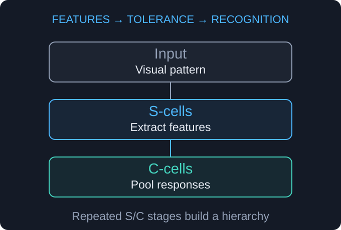
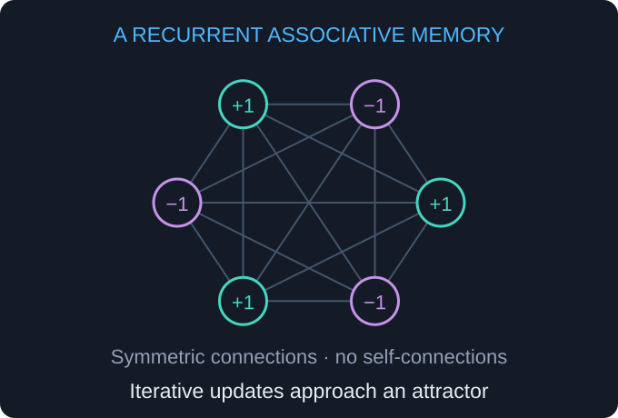
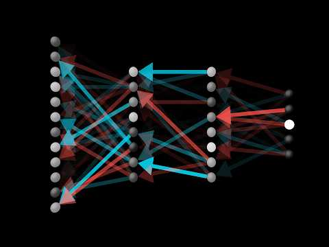
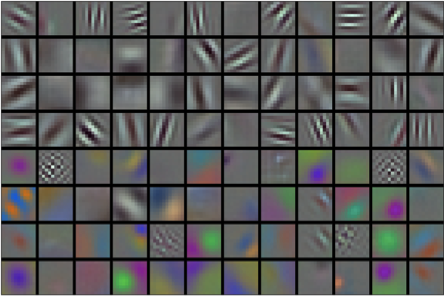

Artificial Intelligence and Machine Learning · Lecture 02 of 16 History of artificial intelligence · Part 2
From AI winters to generative models Build on the early foundations to follow changing expectations, renewed neural learning and the rise of modern generative models.
01 AI winters and expert systems
02 Neural networks, data and computation
03 Deep learning and generative AI
Lecture 02 · Teaching map From milestones to mechanisms Select a concept to jump to its explanation.
From Part 1: evidence updates beliefs · behavior does not establish consciousness · experience changes a model.
Handout explanation ↗ Link to this slide
Chapter V
ERA V: The First Winter Late 1960s – 1970s
Era V — The First Winter 1969–1970s
When expectations outran the technology
1969–70s
Representation Limits and Funding Setbacks
The 1969 book highlights perceptron limits; wider technical and funding problems shape the first winter.
Era V — The First Winter 1969
Minsky & Papert — “Perceptrons” (1969)
XOR asks whether two binary inputs differ. A single perceptron cannot represent this pattern.
Equal inputs → 0; different inputs → 1
Opposite corners share a label; one straight line cannot separate the classes
Wider 1970s funding setbacks had several causes, beyond this book
The first AI winter —
a long period of disappointed expectations & lost funding.
Era V · Representation versus learning XOR needs a richer representation A single threshold draws one straight boundary. Composing units changes what is possible.
Hidden unit 1 h₁ = OR(x₁, x₂)
Hidden unit 2 h₂ = AND(x₁, x₂)
Output XOR = h₁ AND NOT h₂
Inputs (x₁, x₂) Hidden features (h₁, h₂) XOR 0, 0 0, 0 0 0, 1 or 1, 0 1, 0 1 1, 1 1, 1 0
Can the model express the answer? Then: can a learning procedure find its parameters?
Handout explanation ↗ Link to this slide The two hidden units operate in parallel on the same input. The cards list their roles, not a serial computation. These are manually chosen threshold units, not a trained network. Smooth activations will let us use gradients later.
Chapter VI
ERA VI: Expert Systems Boom 1980s
Era VI — The Expert Systems Boom 1980s
Encoding expertise as rules
1960s–80s
Expert Systems
DENDRAL, MYCIN and R1/XCON apply specialist knowledge to chemistry, consultation and configuration.
1982–92
Japan’s Fifth Generation
Parallel logic-oriented computing: substantial research ambition, limited commercial uptake.
Era VI · Expert systems · The idea
What is an expert system?
A program that uses a human specialist’s knowledge to solve problems in a narrow domain.
What it knows Knowledge base Facts and IF–THEN rules supplied by human experts.
How it reasons Inference engine Software that checks which rules match the case and applies them step by step.
Observations about a case enter the inference engine, which applies rules from the knowledge base to reach a conclusion or recommendation.
Observations about this case Apply the rules that match Conclusion or recommendation
People provide the knowledge; the program uses it to reason about a new case.
Handout explanation ↗ Link to this slide Start with the contrast between a specialist and an all-purpose intelligence: an expert system is designed for a bounded task. Define the two terms before tracing the diagram. The knowledge base contains general domain knowledge; observations describe this particular case. The inference engine connects the two. Applying supplied rules does not itself mean learning new rules from examples. Ask students: which part changes when an expert adds a new rule? The knowledge base. The next slide follows the handout’s simplified example.
Era VI · Expert systems · A worked example
One conclusion becomes the next rule’s input
Follow the handout’s IF–THEN chain, one step at a time.
01 · Observe the case Starting facts High feverAND other symptoms
These observations match the first rule.
→
02 · Apply rule 1 Draw a conclusion IF high feverAND other symptomsTHEN suspect infection
New information:suspected infection
→
03 · Apply rule 2 Use that conclusion IF suspected infectionTHEN order more tests
Recommendation:further tests
Rule chaining: a conclusion from one rule can satisfy the condition of another.
Schematic teaching example, not a clinical decision tool or a reconstruction of MYCIN.
Handout explanation ↗ Link to this slide Read the IF-part and THEN-part aloud. Both starting conditions must match rule 1; fever alone does not satisfy this simplified rule. Suspected infection is an intermediate conclusion, not a confirmed diagnosis. The inference engine adds that conclusion to the information available for this case, allowing rule 2 to apply. Ask: where did the input to rule 2 come from? Then ask what happens if the observations do not match any stored rule. Stay with the handout’s rule-chaining mechanism; forward and backward search strategies are not needed to understand this example.
Era VI · Expert systems · The limitation
Who keeps the rules up to date?
Human experts must keep the knowledge correct, consistent and complete enough for the task.
Accuracy Keep rules correct A rule can become outdated when the domain changes.
Example: a component is no longer supported.
Consistency Avoid contradictions A new rule must not conflict with an existing rule.
Example: two rules give opposite answers about compatibility.
Coverage Handle new cases Unusual situations may need rules that nobody has written yet.
Example: a new component has no compatibility rule.
More rules can cover more cases, but people must write, check and maintain them.
Beyond medicine: DENDRAL → chemical structures · MYCIN → medical consultation research · XCON → computer configuration
Handout explanation ↗ Link to this slide These three cards unpack the handout’s accurate, mutually coherent and sufficiently complete knowledge base. Use the schematic computer-configuration examples to show that the maintenance problem extends beyond medicine; they are not claims about particular XCON rules. Experts first have to express their knowledge as explicit rules, then keep those rules useful as new knowledge and exceptions accumulate. MYCIN was a research milestone and was not widely deployed in clinical practice; XCON was commercially deployed. Ask students which card describes a missing rule versus a contradictory rule. A visible chain explains how a result was reached, but does not guarantee that the underlying knowledge is correct.
Era VI — The Expert Systems Boom 1982–92
MELCOM PSI · an inference workstation, 1986IPSJ Computer Museum
Japan's Fifth Generation · 1982–92
The Japanese MITI (Ministry of International Trade and Industry) launched an ambitious project for a new generation of computers with massively parallel, logic-programming capabilities as the base for future AI.
Developed parallel inference machines and logic-programming systems
Faced competition from increasingly capable general-purpose hardware
Ambitious goals and limited commercial uptake; not a proof against symbolic AI
Chapter VII
ERA VII: Connectionism Returns 1980 – 1989
Era VII — Connectionism Returns 1980–89
New architectures and more effective training
1980–89
Neocognitron → CNN
Fukushima’s spatial hierarchy anticipates later convolutional vision models, including LeCun’s networks.
1982
Hopfield Network
Recurrent dynamics retrieve patterns from partial or noisy cues.
1986
Backpropagation Popularized
Efficient chain-rule gradient calculations support learning in multilayer networks.
Era VII · Three different problems What did the neural revival change? Connectionism learns strengths of connections between simple computational units.
Neocognitron / CNN Representation How do we describe an image?Hierarchies of local features.
Hopfield Memory & dynamics How can a partial pattern recover a whole?Repeated state updates.
Backpropagation Training How does an early weight affect the error?Chain-rule gradients.
Architecture specifies the computation. Training finds useful parameter values.
Handout explanation ↗ Link to this slide These are complementary research contributions, not three mandatory components of every neural network. A feedforward CNN does not require Hopfield-style recurrence.
Era VII — Connectionism Returns 1980–89

Neocognitron · simplified S-cell / C-cell hierarchyDiagram based on Fukushima, 1980
From Neocognitron → CNN (1989)
Fukushima, 1980: local feature detection and position tolerance anticipate themes in CNNsLeCun, 1989 : CNNs trained with backprop to read handwritten ZIP codes
Era VII · From local features to objects Reuse a detector, then combine its responses A useful visual feature should still be useful when it moves a little.
Local features are combined across a hierarchy to support recognition Pixels An image of a letter → Local responses Edges / orientations → Combined features Corners / parts → Decision A recognized character Schematic hierarchy · features become more complex across layers A S-cells → feature detection Respond to a local pattern. Modern CNNs reuse learned filters across positions.
C-cells → position tolerance Combine nearby responses. Pooling in later CNNs serves a related role.
Fukushima’s model already learned through self-organization; later CNNs used supervised backpropagation.
Handout explanation ↗ Link to this slide Fukushima, 1980 ↗ Do not equate the historical S/C implementation with every modern convolution or pooling layer. Pooling can provide local tolerance, not universal invariance to all shifts.
Era VII — Connectionism Returns 1982

Hopfield network · schematic associative memoryOriginal diagram · Nobel Prize scientific background
Hopfield Network · 1982 — John Hopfield
A new kind of neural model that repeatedly sends its output back as input — a recurrent neural network .
Stored patterns can be encoded with Hebbian-style weights
“Remembers” states through associative memory
Standard convergence requires symmetric weights and asynchronous updates
Era VII · Hopfield networks Retrieve a memory by its content The answer emerges through repeated updates of the network’s state.
A noisy letter pattern evolves through updates toward a stable pattern; illustrative, not simulated Noisy cue → Update units using connected neighbors Repeat until the state stops changing → Stable pattern Illustrative recall · the network may settle into an unintended attractor Why can it settle? Symmetric weights + no self-connections + asynchronous updates give non-increasing energy.
What can go wrong? Limited capacity and unwanted attractors can cause wrong recall. Synchronous updates can cycle.
A stable state is not necessarily the intended memory, or the closest pattern by ordinary distance.
Handout explanation ↗ Link to this slide This is a conceptual illustration, not a numerical simulation of a fitted network. Define attractor as a stable state approached from a set of initial states. Keep state unchanged at zero local field for the standard convergence argument. Recall changes state; storing memories changes weights.
Era VII — Connectionism Returns 1986

▶ Play video How errors guide weight updates · visual explanation3Blue1Brown · Grant Sanderson
Watch on YouTube ↗
Backpropagation · 1986 — Rumelhart, Hinton & Williams
The influential 1986 paper popularized learning internal representations through backpropagation; the method has earlier roots.
Uses the chain rule to compute gradients ; an optimizer then updates weights
Helped connectionist AI regain popularity after the first winter
Era VII · Backpropagation One training step has three jobs A loss is a numerical measure of prediction error; a gradient is its local sensitivity.
Forward computation goes from input through hidden layers to loss; gradients travel backward Inputs x → Hidden layers learned features → Prediction ŷ → Loss compare ŷ with target y ← Backward: gradients of loss with respect to weights 1 · Predict and measure Run the network forward. Compare its prediction with the known target.
2 · Differentiate → 3 · Update Backprop computes gradients.
Backpropagation computes derivatives. Gradient descent uses those derivatives to take a step.
Handout explanation ↗ Link to this slide Use the diagram to ask why early-layer weights cannot be judged from their own outputs alone. Their effect on the final loss must be traced through all downstream operations.
Era VII · A small numerical example How does a gradient change a weight? Toy model: prediction ŷ = wx; loss L = ½(ŷ − y)².
01 Forward x = 2, y = 6, w = 1
→ 02 Chain rule ∂L/∂w = (ŷ − y)x
→ 03 Optimizer Learning rate η = 0.1
w ← w − η ∂L/∂wHere the new prediction is 3.6 and the new loss is 2.88: one step reduced the error.
The gradient gives a direction; the learning rate controls the step size. Too large a step can overshoot.
Handout explanation ↗ Link to this slide All numbers are a teaching example, not a reconstruction of the 1986 experiment. The derivative of the loss with respect to the prediction is -4; multiply by d(prediction)/dw = x = 2. In a multilayer network, the same chain rule continues through hidden layers.
Chapter VIII
ERA VIII: Second Winter & ML Turn Late 1980s – 1990s
Era VIII — Second Winter & ML Turn Late 1980s–1990s
Commercial setbacks, continued learning research
1991
Vanishing Gradients: a Training Difficulty
Small derivative products can weaken learning signals; this is distinct from the commercial AI winter.
1992–2001
Kernel Methods & Tree Ensembles
Kernel SVMs (1992), soft margins (1995), Ho’s forests (1995), Breiman’s random forests (2001).
Era VIII · Vanishing gradients · Hochreiter, 1991
When the learning signal fades
Backpropagation sends a learning signal—the gradient —from the output back to earlier layers.
The gradient shrinks as backpropagation travels from the output toward earlier layers GRADIENT STRENGTH ILLUSTRATIVE Repeated small derivatives weaken the learning signal Near the output Earlier layers Across many layers, repeated multiplication by small numbers can make the gradient almost zero.
Tiny gradient → tiny weight updates. Early layers barely learn, even when the prediction is wrong.
Handout explanation ↗ Link to this slide Recall the earlier backpropagation slides: compare prediction with target, then work backward to determine how to adjust each weight. The gradient describes how changing a weight would affect the error; the optimizer uses it to choose an update. Read the handout plot from left to right: it follows the backward learning journey from near the output toward earlier layers. Height represents gradient strength; the curve is illustrative, not measured data. For a simple numerical example, ten factors of 0.5 give about 0.001. The backward factors come from derivatives and weights; real networks combine multiple paths and matrices, and do not all halve the signal at every layer. This is the handout’s repeated-small-factors intuition, not a numerical model of every network. Ask: if the signal reaches the first layers almost unchanged versus almost zero, which case lets those layers learn more effectively? With ordinary gradient-based updates, a tiny gradient provides little change even if the output error is large. The same difficulty can occur across many time steps in recurrent networks. Hochreiter analyzed this training difficulty around 1991; it does not by itself explain the commercial AI winter.
Era VIII → IX · Later responses to the training problem
Helping the learning signal reach earlier layers
Deep networks were hard to train. That did not mean they could never learn.
Change how a unit responds Activation functions · e.g. ReLU ReLU passes positive inputs unchanged, so this activation step does not shrink their gradient.
Choose a better starting point Weight initialization Choose the initial weight sizes carefully to help signals avoid becoming too small or too large.
Add a shorter route backward Residual connections Add a shortcut around a group of layers, giving the learning signal a more direct path.
Keep internal values in scale Normalization Rescale values inside the network to make training more stable.
Whether gradients vanish depends on the network’s design. These choices help; they do not guarantee success.
Historical context: training difficulties were one part of the story; the AI winter also involved unmet promises and funding cuts.
Handout explanation ↗ Link to this slide Follow the handout’s two qualifications: this is a training difficulty, not proof that deep learning is impossible, and its severity depends on design choices. Introduce each technical name through the plain-language label above it; students do not need the formulas at this stage. ReLU has derivative one on the positive side, but can have a zero gradient on the negative side and cannot prevent every source of shrinking gradients. Initialization means choosing weights before learning begins. A residual block adds its input to the result of its layers, which provides a direct backward path; the ResNet milestone came later, in 2015, not in 1991. Normalization adjusts the scale of internal values and can improve training behavior; it is not a universal solution. Ask students to identify the remedy that changes the starting weights and the one that adds a shortcut. Close by separating the technical difficulty from broader commercial and funding setbacks. Research continued throughout, including the alternative statistical methods introduced next.
Era VIII · Support-vector machines Choose a boundary with a wide margin Among separating boundaries, an SVM seeks the largest gap to the nearest training examples.
A vertical maximum-margin boundary lies midway between the highlighted closest examples of two classes Feature 1 x₂ Boundary A separating line in this input space Margin & support vectors The highlighted nearest points constrain the gap Soft margins (1995) allow violations: balance a wide margin against penalties for difficult examples.
Handout explanation ↗ Link to this slide The figure is schematic, not a fitted numerical SVM. Support vectors determine the solution; soft-margin support vectors may also lie inside the margin or on the wrong side.
Era VIII · Kernel methods · The intuition
What if a straight line is not enough?
Some classes form shapes that a straight boundary cannot separate.
Blue circles form a central group surrounded by pink squares. A straight line cannot separate these groups; a suitable kernel SVM can learn a curved boundary around the central group. Schematic illustration.
A straight line cannot separate these groups
A kernel SVM can learn a curved boundary
Blue circles and pink squares are two classes.
The boundary separates the centre from the outside.
A kernel is a special way of comparing pairs of inputs. A suitable kernel lets an SVM learn more flexible boundaries.
The trick: use similarities to work with a richer description of the data, without explicitly building all the extra features.
Handout explanation ↗ Link to this slide Begin with the picture rather than an equation. Blue circles form a group in the centre and pink squares surround it. Ask students to imagine moving or rotating a straight line: it cannot put all blue points on one side and all pink points on the other. The right plot shows the kind of curved boundary a suitable kernel SVM can learn; it is schematic, not the output of a numerical fit. The handout describes kernels as special similarity functions. The algorithm compares pairs of training inputs using a chosen kernel, then learns from their class labels. Those comparisons correspond to working with a richer feature representation without explicitly calculating all its coordinates. A straight separating boundary in that representation can be curved when viewed in the original inputs. Not every arbitrary similarity is a valid kernel; neither a formula nor that mathematical condition is needed for the intuition here. The kernel does not automatically discover the right classes: the SVM still needs labelled examples and training. Connect back to the previous slide: the wide-margin idea remains, but the representation is richer.
Era VIII · Random forests · The intuition
Ask several trees, then count their votes
A decision tree learns yes/no questions from labelled examples. A forest combines many trees.
Example fruit: red colour · round shape · smooth skin. Is it an apple or an orange?
Tree A · Colour “Is it red?” Yes → votes apple
Tree B · Shape “Is it round?” Yes → votes orange
Tree C · Texture “Is the skin smooth?” Yes → votes apple
2 votes for apple · 1 for orange → apple Simplified example: one tree can be wrong while the majority is right.
Why different trees? They train on different random samples of examples and consider randomly selected features at each split.
Combining different trees often makes predictions more reliable, but a whole forest is harder to explain than one tree.
Handout explanation ↗ Link to this slide Follow the handout’s progression: one decision tree asks a sequence of yes/no questions; a forest collects many predictions and combines them. These deliberately simplified one-question trees show the voting mechanism, not a trained fruit classifier or reliable botanical rules. All three receive the same fruit. Tree B can get this case wrong because roundness alone does not distinguish apples from oranges. The majority chooses apple. A forest does not guarantee a correct answer: ask what happens if two trees make the same mistake. Explain diversity without requiring the term bootstrap: give each tree a random training sample, allowing repeated examples, and at each split let it choose among a random subset of measurements. For example, colour might be available for one split while shape and texture are available for another. The questions and thresholds are learned from labelled data, not supplied as expert-system rules. A single tree may change a lot if its training examples change; combining different trees can make the result more stable. The example is classification; when predicting a number, trees can instead have their numerical predictions averaged. The sampling description follows Breiman’s 2001 formulation; Ho’s random decision forests appeared in 1995. One tree is easy to inspect, while hundreds are harder to trace.
Chapter IX
ERA IX: Deep Learning Rises 2006 → 2012
Era IX — Deep Learning Rises 2006→12
Data and compute ignite a new spring
2006–12
Representation Learning, Data and Compute
2006: deep belief nets. 2009: ImageNet. 2010: ILSVRC begins. 2012: AlexNet’s breakthrough.
Era IX · Why now? Three ingredients became useful together Deep learning learns multiple levels of representation from data.
What to learn from Data Many varied examples make richer models worth training.
What makes it feasible Compute GPUs accelerate the parallel arithmetic needed for large networks.
What makes it work Training methods Better activations, initialization and regularization help models learn and generalize.
More data motivates larger models; compute makes them feasible; better training makes the capacity useful.
Handout explanation ↗ Link to this slide Connect the three cards in a loop verbally. No ingredient alone explains the transition. The 2006 deep-belief-network work was one route to renewed interest in deeper models, not the same event as ImageNet or AlexNet.
Era IX · Dataset versus benchmark A benchmark makes progress comparable ImageNet is a broad archive. ILSVRC defines a particular task, subset and evaluation protocol.
Learn Training set Fit model parameters using labeled examples.
→ Develop Validation set Choose settings and compare candidate models.
→ Measure Held-out test set Evaluate the final system under shared rules.
ILSVRC classification 1,000 classes; about 1.2 million training images.
Scope of the result Correct category predictions under this protocol—not all of visual understanding.
A test is useful when it measures examples the model-development process has not optimized against.
Handout explanation ↗ Link to this slide The broad archive has about 14 million images and over 20,000 categories. Distinguish benchmark training, validation and held-out test roles. Repeated selection against the test set weakens its value as an independent check.
Era IX — Deep Learning Rises 2012

Filters learned by the first layer of AlexNetKrizhevsky, Sutskever & Hinton, 2012
AlexNet · 2012 — Krizhevsky, Sutskever & Hinton
A deep neural model and a milestone in computer vision.
Early layers learn local edges and color patterns; later layers combine features
GPU training, ReLU, dropout and augmentation made the large model effective
A major ILSVRC result made the value of learned representations visible
Era IX · AlexNet, 2012 Learn the features—and make training work The first-layer filters shown on the previous slide emerged from training on images.
Convolution + ReLU Hierarchical visual features; efficient training with non-saturating positive activations.
Dropout + augmentation Reduce overfitting by varying active units during training and transforming training images.
Labeled data + GPUs Train a large model at a practical scale, then compare it on the common benchmark.
15.3% vs 26.2% top-5 test errorILSVRC 2012: winning entry versus runner-up. Top-5 error: the correct class is absent from the five guesses.
The breakthrough combined architecture, training, data and hardware; depth alone was not the explanation.
Handout explanation ↗ Link to this slide AlexNet paper ↗ The quoted competition score is for the winning entry, which combined networks; do not label it a single model’s standalone accuracy. The error reduction is 10.9 percentage points, about 42% relative.
Chapter X
ERA X: Modern Generative AI 2014 – Today
Era X — Modern Generative AI 2014–Today
The era of generative models and scale
2015–17
AlphaGo and the Transformer
AlphaGo: Fan Hui (2015), Lee Sedol (2016). The Transformer paper appears in 2017.
2014–20
Generative Models Beyond Language
GANs (2014) and diffusion models, including DDPM (2020), provide other routes to generation.
2020–22
GPT-3 → ChatGPT
Massive-scale generative transformers reach the public and open a new surge of interest.
Era X · AlphaGo · 2015–16 Learning tells search where to spend effort Networks learn from human games and self-play; exhaustive search is infeasible.
Which moves? Policy network Suggest promising moves from the current board.
What might happen? Tree search Explore selected continuations; collect evidence about outcomes.
How promising? Value network Estimate how favorable a position is without playing every continuation.
Policy and value estimates guide search; search results inform the move. Learning and search cooperate.
Handout explanation ↗ Link to this slide These cards are roles in an interacting system, not a strict serial pipeline. The original AlphaGo also used rollout evaluation. Distinguish supervised learning from human play and reinforcement learning through self-play. Fan Hui match: 2015; Lee Sedol: 2016.
Era X · Attention A token’s meaning depends on its context Unmasked encoder example: “bank” can use later context. A causal decoder can only look backward.
She sat on the bank of the river
Relevance scores Compare “bank” produces a query; other positions provide keys.
→ Context matters Weight Normalize scores into attention weights. “river” can help disambiguate “bank”.
→ Updated representation Combine Mix the value vectors using those weights.
Word2vec learns word vectors; a Transformer builds representations that change with surrounding context.
Handout explanation ↗ Link to this slide This is an intuition example, not measured attention weights. In an unmasked encoder, bank can attend to river. In a causal decoder, bank cannot look ahead to river; the representation at river can attend back to bank. Attention weights alone are not a complete explanation of model behavior.
Era X · Different routes to generation “Generative AI” is a family of mechanisms These models learn patterns in data and use them to produce new samples.
Language models Autoregressive models Context → next token → append → repeat.Generate a sequence step by step.
Adversarial training GANs · 2014 A generator makes samples; a discriminator learns to distinguish generated from real samples.Learn through competition.
Iterative refinement Diffusion · DDPM, 2020 Train to reverse added noise. Generate from noise through repeated denoising steps.Learn to remove noise.
AlphaGo chooses game actions with learning and search; it is not a text or image generator.
Handout explanation ↗ Link to this slide The GAN discriminator supplies a training signal, not a factual verifier. Diffusion uses a learned reverse process; generation does not recover one specific training image by undoing its exact noise. Architectures and generation methods are different axes: a Transformer can be used inside different model families.
Era X — Modern Generative AI 2020
GPT-3 · 2020 — “Generative Pre-trained Transformer 3”
The third in a series of generative models built on the transformer architecture, aimed at natural-language tasks.
Largest reported model: 175 billion parameters (2020)
Few-shot prompts provide examples in context without changing model weights
Fluent generation can still produce false or inconsistent statements
Era X · Autoregressive language modeling A whole response grows one token at a time A token is a word, part of a word, or another text unit.
The sky is ?
P(next token | preceding tokens)
Next-token distribution blue 0.65
gray 0.25
other 0.10
Invented probabilities for illustration.
Predict Compute probabilities from the current context.
→ Choose Select or sample one token.
→ Append & repeat Add it to the context and predict again.
A plausible continuation can be factually wrong. Predicting text is not the same as checking its truth.
Handout explanation ↗ Link to this slide These are illustrative word-level tokens, not a claim about a specific tokenizer. Other stands for many alternatives, not one token. Generation stops at a stopping condition such as an end token or a length limit.
Era X · GPT-3 few-shot behavior Examples in a prompt do not retrain the model Few-shot prompting shows the desired pattern inside the current context.
English → French?
During inference Read the examples and continue the pattern.The model weights stay fixed.
During training / fine-tuning Use examples, a loss and an optimizer.The model weights change.
Context changes what the model conditions on; training changes the model’s parameters.
Handout explanation ↗ Link to this slide GPT-3 paper ↗ Prompt-based adaptation is not a guarantee of correct translation or reliable reasoning. GPT-3’s reported few-shot evaluation used no gradient updates for the prompted tasks.
A Meta-Lesson Sutton, 2019
General learning and search methods can benefit from growing computation.
Sutton’s 2019 argument, paraphrased: scalable general methods often outperform extensive hand engineering. This is a research perspective, not a quantitative law.
The 2022 launch ChatGPT · November 2022
A chatbot for everyone — and a new era opens
Built on GPT-3.5, refined with RLHF (Reinforcement Learning from Human Feedback)
A dialogue interface made language-model capabilities widely accessible
A milestone in public adoption; outputs still require evaluation
Illustrative exchange · not an archived transcript
You: What is machine learning?
ChatGPT: A way for computers to learn from data…
Era X · Understanding the 2022 launch From a text model to a conversational assistant ChatGPT’s launch combined a GPT-3.5-based model, adaptation for dialogue and an accessible interface.
01 · Language modeling Pretrain Learn broad text patterns through next-token prediction.
→ 02 · Supervised tuning Demonstrate Fine-tune on examples of helpful conversations and responses.
→ 03 · RLHF Learn from preferences Humans rank responses; a reward model learns preferences; optimization adjusts the assistant.
Human feedback shapes response behavior. It does not guarantee that a fluent answer is true.
Handout explanation ↗ Link to this slide This is the launch-era pipeline at a conceptual level, not a specification of current ChatGPT versions. Contrast weight updates in supervised tuning and RLHF with fixed-weight few-shot prompting. A chat interface is the access layer, not itself the model architecture.
Recent methods · Jev / System One · Announced 15 September 2026
Jev: decisions that software can use
TypeSafe’s early-access model answers narrowly defined questions with structured values and probabilities.
01 · Read the situation Customer message “I was charged twice.”
Which team should handle this?
→
02 · Define allowed answers Choose one category Billing
→
03 · Return a decision Billing Billing: 0.90
Invented routing example and probabilities, not a recorded Jev response.
TypeSafe describes parallel decision outputs, rather than a token-by-token text response.
Handout explanation ↗ TypeSafe announcement ↗ Link to this slide Introduce this as a September 2026 development after the established ChatGPT milestone. System One is TypeSafe’s name for this approach, inspired by fast judgments; it is not evidence of human-like cognition. Trace the message, permitted categories and invented distribution. The surrounding software decides whether to route the message or request review. Jev is designed for these bounded decisions, not free-form string generation. Language models can also produce structured outputs; the distinction is the decision-focused model and training design, not the first appearance of structured AI output. The release and speed claims come from the provider; avoid presenting advertised speedups as universal results.
Recent methods · Making uncertainty useful
A valid answer can still be a wrong answer
Output structure Type safety Return one of the permitted categories.
“Billing” is allowed, but could still be the wrong team.
Probability quality Calibration Of many predictions assigned 80% probability, roughly 80% should be correct.
This describes a group of predictions, not a promise about one answer.
TypeSafe’s training objective RLCD Reinforcement Learning for Calibrated Decisions.
Train for decisions with probabilities that reflect uncertainty.
Software can use uncertainty to request review. Correct structure alone does not establish factual correctness.
An emerging approach: check performance and calibration on the task you actually need.
Handout explanation ↗ TypeSafe announcement ↗ Link to this slide Reconnect to Part 1: probabilities express uncertainty. For calibration, imagine 100 predictions each assigned 0.8 probability to the chosen answer; about 80 should be correct if those predictions are well calibrated. This is a teaching illustration, not a measurement of Jev. TypeSafe calls its training approach RLCD, in contrast to the human-preference objective just discussed for RLHF. Its separate confidence field for Choice and Score is derived from the probability distribution; it is not simply another name for the probability of the chosen answer. Type safety constrains output form, not truth. TypeSafe’s workflow evaluations compare against reference probabilities from other models, so agreement there does not by itself demonstrate real-world correctness.
What to remember
A history of interacting ideas and changing expectations
AI is an interdisciplinary field : stats · cybernetics · computation · logic
Optimism and setbacks recur; their causes and timing vary across communities
Rules, search, feedback and learned representations continue to combine
Recent methods combine learned representations with interfaces for people and software
Lecture 02 · Five ideas that keep returning New systems recombine older ideas Follow the recurring mechanism, not just the date or the name.
Thread Earlier form Part 2 connection Inference Reason from evidence Rules and learned predictions Search Explore possible actions AlphaGo’s guided lookahead Feedback Use outcomes to adjust behavior Training and self-play Symbolic reasoning Explicit representations and rules Expert-system inference chains Learned representations Adjust connections from experience CNN features and contextual token vectors
Next lecture: how to search systematically while tracking goals, costs and unexplored alternatives.
Handout explanation ↗ Link to this slide Ask students to trace one thread across the two parts and give an example of two threads combined. Do not imply each era completely replaced its predecessors. Lecture 02 · Wrap-up Before you leave this part Explain why AI progress includes setbacks as well as breakthroughs. Distinguish rule-based expertise from learning from data. Describe how data, computation and learning contribute to modern AI. Choose one idea and explain it in your own words. Use XOR, a rule chain, a gradient step or next-token prediction as your example.
Sources and further reading